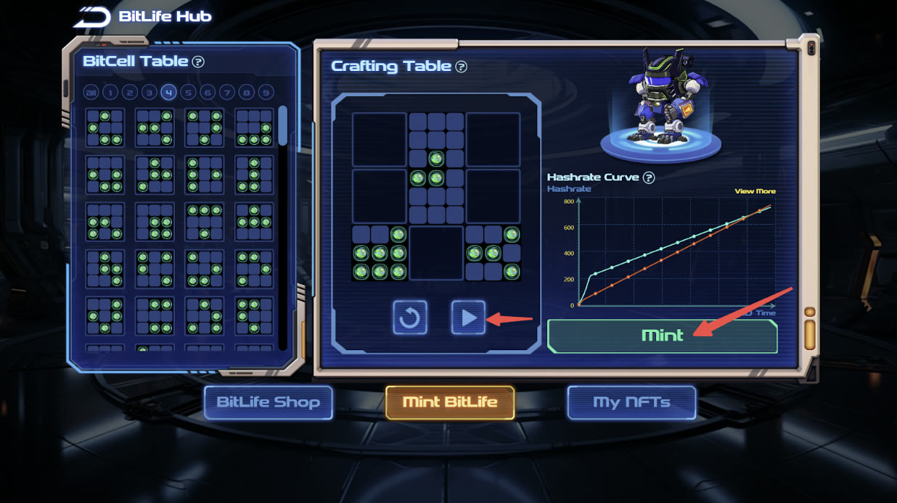

Cellula
把全链自主生命的复杂机制，转译成用户能理解、团队能实现、生态可扩展的产品生命周期。

机制创新必须先成为用户能理解的产品
Cellula 探索的是全链自主生命：生命状态、演化过程与资产表达都由链上规则驱动。这类产品同时包含算法、合约、资产、视觉和游戏化体验，任何一层脱节，用户都会只看到抽象概念或投机符号。
核心挑战不是再包装一个 NFT，而是把“生命如何产生、演化、表达价值并继续参与”组织成完整路径，并让技术、设计和运营团队对同一套生命周期达成一致。
在创新概念与可交付产品之间搭桥
我作为产品负责人和联合创始人，负责产品架构、生命周期、链上演化体验、BitCell / NFT 等核心模块的产品定义，并推动机制、合约、设计和前端之间的协同落地。
融资与孵化属于团队成果。本案例聚焦我承担的产品判断与交付责任，不把公司层面的结果等同于个人单独完成。
用生命周期降低机制理解成本
先定义生命阶段，再拆产品模块
围绕产生、成长、演化和资产表达组织状态，避免团队按页面或功能各自理解机制。
让链上变化拥有清晰反馈
把合约和算法结果映射为用户能看到的状态、视觉和下一步操作，使“上链”不只是后台事实。
区分规则价值与资产价值
资产承载生命状态和参与关系，但产品叙事不能只围绕价格；核心仍是规则驱动的演化与持续参与。
为生态扩展保留标准接口
核心生命与资产结构需要能被更多玩法和应用理解，避免每次扩展都重写底层产品逻辑。
让规则、行为与资产围绕同一生命演化
产品生命周期不是一条营销漏斗，而是机制执行的用户化表达：用户获得或构造生命单元，规则驱动其状态变化，界面将变化反馈为可理解的演化结果，资产和后续参与再围绕新状态展开。
机制越新，越需要控制表达复杂度
外部认可验证方向，产品仍要回答长期使用
Cellula 入选 Binance Labs 第六季孵化计划，并完成 200 万美元 Pre-Seed 融资。这些团队成果验证了全链自主生命方向的创新性与市场关注度。
对我的产品方法影响更深的是：当机制足够复杂时，产品经理不能只写功能清单，必须建立统一状态模型、生命周期和异常边界；同时还要持续检查，用户是在理解并参与规则，还是只被短期资产预期驱动。
证据边界：Binance Labs 第六季入选可由 Binance 官方公告 ↗ 核对；融资金额与我的职责来自公开履历记录。页面不披露保密的商业、融资或内部机制材料。